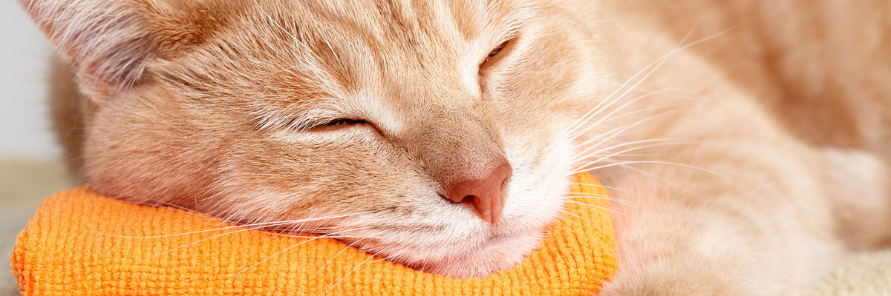

{kind=link}
Levando o gato para casa
Seja seu novo gato proveniente de um abrigo, casa, rua ou fazenda, as primeiras vinte e quatro horas em sua casa são especiais e essenciais. Antes que você traga um novo gato em sua vida, este artigo ajuda a entender um pouco sobre como os gatos se relacionam com o mundo.
Para o gato, o território é de extrema importância. Um gato vê seu território da mesma forma que a maioria de nós vemos nossas roupas, sem elas, nos sentimos nus e vulneráveis. Coloque-nos nus em um quarto cheio de estranhos e a maioria tentará se esconder! É comum com os gatos, independentemente de virem de lares ou das ruas, eles se esconderem em um novo território. Gatos muito sensíveis ou antissociais, muitas vezes, se escondem durante uma semana ou mais! Você sabe que este gato é agora um membro da família, mas o gato não.
{kind=link}
Preparando a casa
Você pode ajudar a fazer a transição para um novo lar de um jeito mais suave e fácil, oferecendo alguma privacidade a ele. Se possível, comece preparando sua casa antes de trazê-lo. Escolha um quarto para a caixa sanitária; um banheiro é uma boa opção. Encha a caixa com dois ou quatro centímetros de areia, e, se possível, coloque-a em um canto.
Agora crie um refúgio seguro para o gato se esconder. Você pode comprar uma cama coberta para gatos, mas uma caixa de papelão virada para baixo, com duas “portas” cortadas funciona bem. Por que duas “portas”? Muitos gatos sentem-se mais seguro se têm uma segunda opção para “escapar”. Escolha uma caixa grande o suficiente para que o gato se levantasse, olhe em volta, se estique e deite, mas que seja acolhedora! Coloque a caixa ao lado da parede ou em um canto, onde o gato possa ver a porta do quarto. Você não quer que o gato sinta-se preso. Coloque um arranhador de sisal, cortiça ou papelão próximo a ele. Por fim, limpe uma prateleira para o gato em um lugar mais alto para que ele possa ver seu novo mundo.
Depois de ter preparado o banheiro, prepare todos os cômodos da casa. Existem superfícies altas para o gato? Se a resposta for “não”, faça algumas! Os gatos precisam ser capaz de saltar e analisar seu território. Você tem lembranças valiosas que podem quebrar com facilidade? Guarde-as até que seu gato esteja feliz com a mudança. Confira todos os nichos e cantos. Existem lugares que poderiam ser perigosos para o gato explorar ou se esconder? Se sim, bloqueie-os. Por último, coloque um arranhador em cada cômodo.
{kind=link}
Chegada antes do previsto
Se as circunstâncias exigem que você traga o gato antes que sua casa esteja pronta, mantenha-o em sua caixa de transporte até que ele tenha seu cômodo arrumado! Ele vai ficar bem lá por um tempo. Do lado oposto à caixa sanitária, coloque uma tigela de água fresca. Depois que este cômodo estiver arrumado, coloque a caixa transportadora próxima ao “cômodo seguro”. Feche a porta do banheiro antes de abrir a caixa transportadora. Não puxe o gato para fora. Permita que ele saia por conta própria e comece a explorar seu novo lar. Agora, saia da sala. Sim, saia. Lembre-se que você está lhe dando tempo para se acostumar. Vá e prepare uma pequena quantidade de ração de boa qualidade. Calmamente coloque-a ao lado do reservatório de água.
Não se aproxime do gato! Deixe o gato vir até você. Se ele não se aproximar, volte em quinze minutos. Não fique surpreso se ele não comer. É comum para gatos com um novo lar não mostrarem interesse, muitas vezes por vários dias. Pegue o que sobrou e saia. Volte em algumas horas com uma nova refeição com a mesma ração de alta qualidade. Se o gato estiver abertamente solicitando carinho, comendo e não se escondendo, você pode abrir a porta e dar a ele mais um cômodo. Faça isso lentamente até que tenha introduzido o gato em todos os cômodos da sua nova casa.
Lembre-se de deixar o gato definir o ritmo. Seja paciente. Pode demorar algumas semanas para que o gato entenda que este lugar diferente é seu novo território.